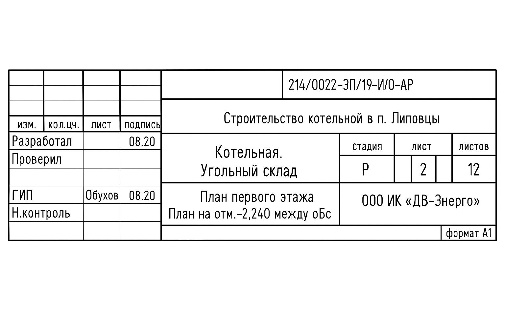
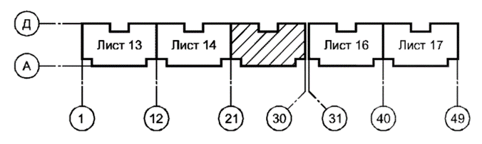
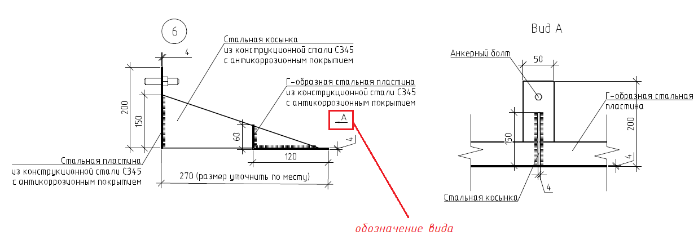
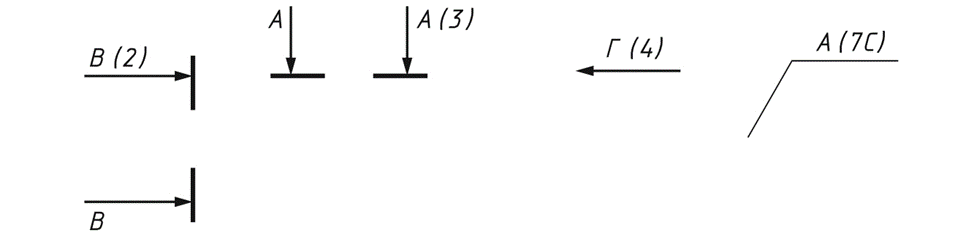

Учимся читать чертежи
Чтение проектной и рабочей документации — это ключевой навык для инженеров ПТО, мастеров, прорабов и других участников строительного процесса. Грамотный подход к чтению чертежей позволяет избежать ошибок при производстве работ, правильно планировать ресурсы и своевременно выявлять противоречия в документации.

Для начала посмотрите видео. В нем я рассказала, как грамотно читать чертежи на примере раздела АР.
При входном контроле рабочей документации обращайте внимание на согласованность информации: данные в разных ее разделах должны совпадать и исключать разночтения. Например, это касается наименования объекта, как показано в нашем примере.
Видео получилось большим, но очень полезным для вашей текущей или будущей работы.
Как читать чертежи
1. Основная надпись
Первое, на что следует обращать внимание при открытии любого чертежа — основная надпись. Она расположена, как правило, в правом нижнем углу листа.
Иллюстрация к уроку
Изображение сохранено с исходной встроенной страницы.

Информация, которую мы получаем из основной надписи:
- Тип объекта: жилой дом, школа, административное здание и т.п.
- Вид работ: новое строительство, реконструкция, капитальный ремонт.
- Раздел проекта: АР (архитектурные решения), КЖ (конструкции железобетонные), ОВ (отопление и вентиляция), ЭО (электроосвещение), ВК (водоснабжение и канализация) и др.
- Конкретное изображение на листе: план 1 этажа, фасад, разрез, узел, схема и т.п.
После изучения основной надписи можно быстро понять, о каком объекте идет речь, какие работы предстоят и что конкретно изображено на данном листе проекта
Встроенное упражнение — сохранен текст
Статическое представление
TestCards
Текстовые фрагменты упражнения извлечены с исходной встроенной страницы. Проверка ответов и анимация здесь не работают.
- Где обычно находится основная надпись на чертеже?
- В центре листа
- В правом нижнем углу
- В левом верхнем углу
2. Лист общих данных / Пояснительная записка
Следующий важный этап — изучение первого листа проекта (лист общих данных) или пояснительной записки. Эти документы содержат обобщенную информацию, которая относится ко всему проекту или к отдельному разделу.
Пояснительная записка и лист общих данных задают общую картину проекта и служат ориентиром при изучении всех последующих листов
3. Чтение чертежей
Чтение графической части проекта — основа всей строительной деятельности. Каждый вид чертежа имеет свое назначение и структуру.
Основные виды чертежей:
- Планы
- Разрезы
- Фасады
- Узлы
- Виды
- Схемы (аксонометрические, принципиальные)
- Профили (для наружных сетей)
Размеры на чертежах
Линейные размеры на чертежах указывают в миллиметрах. Исключение – чертежи наружных сетей и коммуникаций, генерального плана и транспорта. На таких чертежах линейные размеры указывают в метрах.
Отметки уровней (высоты, глубины) элементов конструкций, оборудования, трубопроводов, воздуховодов и др. от уровня отсчета (условной нулевой отметки) указывают в метрах.
Планы
План — это горизонтальный разрез здания на уровне условной «срезки» (обычно на высоте 1/3 этажа или уровне подоконников). Мы как бы смотрим на здание сверху, сквозь срез.
Виды планов:
- Объемно-планировочные — общее представление о расположении элементов.
- Кладочные планы — для зданий из кирпича или блоков.
- Планы отделки — показывают отделочные материалы, покрытия.
- План кровли — с указанием уклонов, элементов водоотвода и пр.
- Фундаментные планы — для устройства фундаментов, ростверков и пр.
- Планы конструкций — колонны, балки, фермы, стропила.
- Опалубочные и армировочные планы — для монолитных конструкций.
- Планы внутренних и наружных инженерных систем — ОВ, ВК, ЭО и др.
- Генеральный план — расположение здания на участке, благоустройство, сети.
Встроенное упражнение — сохранен текст
Статическое представление
TestCards
Текстовые фрагменты упражнения извлечены с исходной встроенной страницы. Проверка ответов и анимация здесь не работают.
- В каких единицах указывают отметки уровней на чертежах?
- Сантиметры
- Миллиметры
Ниже я подготовила для вас удобную памятку, как правильно читать планы. Рекомендую вам скачать ее для дальнейшей работы.
Материал к уроку (PDF)
Как правильно читать планы:
PDF получен с исходной страницы. Поля для названия организации и других персональных данных оставлены пустыми.
Планы чертежей могут различаться в зависимости от раздела проекта, но определенная базовая информация сохраняется всегда. Независимо от принадлежности к тому или иному разделу, на каждом плане всегда присутствуют: контуры и габариты здания или сооружения, координационные оси, размеры, номера помещений и их экспликация. Однако специфическая информация напрямую зависит от раздела проекта.
Пример
В архитектурных чертежах (раздел АР) отражаются материалы, из которых выполнены стены и перегородки (отображаются с помощью различных штриховок), типы полов, а также маркировки оконных и дверных проёмов.
В разделе отопления и вентиляции (ОВ) отражаются трассы трубопроводов с указанием их диаметров и материалов, расположение стояков, отопительных приборов и элементов запорно-регулирующей арматуры.
В чертежах по электроосвещению (раздел ЭО) отрражаются кабельные линии, их маршруты (в том числе подъемы и опуски), типы кабелей, выключатели, светильники и другие элементы системы.
⚠️ Каждый раздел имеет свои уникальные условно-графические обозначения, пояснения, технические примечания и детали исполнения, которые необходимо учитывать при чтении документации.
Если план не помещается на листе принятого формата, его делят на несколько участков, размещают их на отдельных листах. В этом случае на каждом листе, где показан участок изображения, приводят схему целого изображения с необходимыми координационными осями и условным обозначением (штриховкой) на данном листе участка изображения.

Разрез
Разрез — это изображение здания, мысленно рассеченного вертикальной плоскостью.
Фасад
Фасад – это вид здания в ортогональной проекции, как будто вы смотрите на здание спереди.
Узлы, виды, сечения
Если отдельные части вида (фасада), плана, разреза требуют более детального изображения, то дополнительно выполняют местные виды и выносные элементы – узлы и фрагменты.
Узел – это укрупненный фрагмент важной части конструкции (стык перекрытия и стены, утепление балкона и т.д.).
Вид – это изображение отдельного ограниченного места поверхности. Используются для уточнения структуры отдельных элементов детали. Как будто мы смотрим на элемент с той или иной стороны. Направление стрелки указывает на направление взгляда.

Сечение – это изображение плоской фигуры, которая получается при мысленном рассечении предмета одной или несколькими плоскостями. На сечении показывают только то, что получается непосредственно в секущей плоскости.
Сечение и разрез на чертеже отличаются тем, что на сечении отображается только то, что входит в рассеченную плоскость, а на разрезе – и то, что входит в нее, и то, что остается за ней. Если чертеж разреза, вида, выносного элемента находится на другом листе, то при обозначении на чертеже рядом с цифровым или буквенным обозначением в скобках указывается номер листа, на котором эти изображения помещены.

Теперь давайте вместе прочитаем чертеж по фрагменту ниже. Если вы не можете рассмотреть детали чертежа, включите полноэкранный режим в правом нижнем углу интерактива.
4. Изучение спецификаций
Спецификация – это текстовый проектный документ, который определяет состав оборудования, изделий и материалов. Она предназначена для комплектования, подготовки и осуществления строительства.
Отлично! Вот и еще один урок позади! Вы двигаетесь в правильном направлении. Давайте закрепим материал урока в упражнении на соответствие. После выполнения задания переходите в следующий урок.
Встроенное упражнение — сохранен текст
Статическое представление
Connect-cards
Текстовые фрагменты упражнения извлечены с исходной встроенной страницы. Проверка ответов и анимация здесь не работают.
- чтение чертежей
- Горизонтальный разрез здания
- Вертикальный разрез здания
- Вид здания спереди
- Спецификация
- Список оборудования и материалов
- Чтение чертежей
- Сопоставьте тип чертежа с его описанием:
{kind=link}